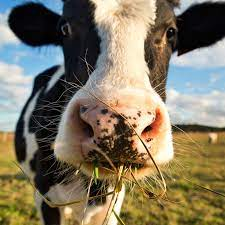

Bovine Boulevard
Come see the wonderful cows of Bovine Boulevard!!
We have a wonderful variety of stock for you
Bertha
Gregith
Walbert
Cornflower

Our cows have been trained since birth to be dancing phenomenon.